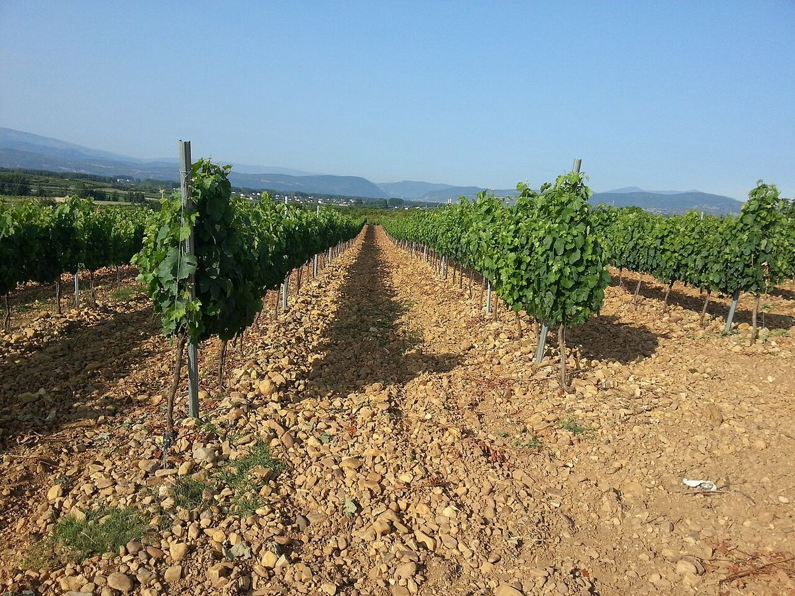

BIANCO
Bierzo è una denominazione di origine del nord-ovest della provincia di León, riconosciuta nel 1989. È la patria dei rossi di Mencía e dei bianchi di Godello, spesso da vecchi vigneti in collina.

Il Bierzo fu una zona importante in epoca romana, soprattutto per l'estrazione dell'oro, di cui sono testimonianza Las Médulas, dichiarate Patrimonio dell'Umanità. La viticoltura si consolidò nel Medioevo grazie ai monasteri, tra cui quello cistercense di Santa María de Carracedo, e al passaggio del Cammino di Santiago, che attraversa la zona per Ponferrada e Villafranca del Bierzo. La Denominazione di origine fu riconosciuta nel 1989. Alla fine degli anni Novanta l'arrivo di nuovi produttori interessati ai vecchi vigneti di Mencía in collina diede alla regione una notevole visibilità internazionale.
Il Bierzo è una conca circondata da montagne, bagnata dal fiume Sil e dai suoi affluenti, al confine tra Castiglia e León e Galizia. Si distinguono il Bierzo Bajo, la parte centrale pianeggiante, e il Bierzo Alto, più montuoso. Le catene circostanti lo proteggono in parte dai venti freddi e dalle piogge atlantiche, creando un clima di transizione tra l'umidità atlantica della Galizia e la secchezza continentale della Meseta, con temperature relativamente miti e piogge moderate.
Sui pendii predominano suoli di ardesia e quarzite, poveri e ben drenati, mentre sul fondovalle abbondano suoli più profondi di argilla e alluvioni. I vigneti in collina tendono a dare vini più concentrati e tesi.
Il Mencía è il vitigno dominante e dà rossi dal colore vivace, aromi di frutta rossa e nera, note floreali e minerali e un'acidità fresca. Si coltiva anche la Garnacha Tintorera. Tra i bianchi, il Godello ha acquistato importanza per i suoi vini ben strutturati, accanto alla Doña Blanca e al Palomino, molto diffuso in passato. Si producono rossi giovani e affinati, rosati e bianchi, con o senza barrique. Il Mencía, coltivato anche in Galizia e nel Portogallo centrale, dove è conosciuto come Jaen, trova nel Bierzo una delle sue zone di più antica tradizione.
Un disciplinare recente ha introdotto nel Bierzo una classificazione basata sull'origine geografica, ispirata al modello della Borgogna. Oltre ai vini generici della denominazione, riconosce i vini di villaggio, provenienti da un singolo comune; i vini di paraje, da una località precisa; e le categorie di vigneto classificato e grande vigneto classificato, riservate a parcelle di caratteristiche ed età particolari. Questa classificazione convive con le menzioni tradizionali di invecchiamento.